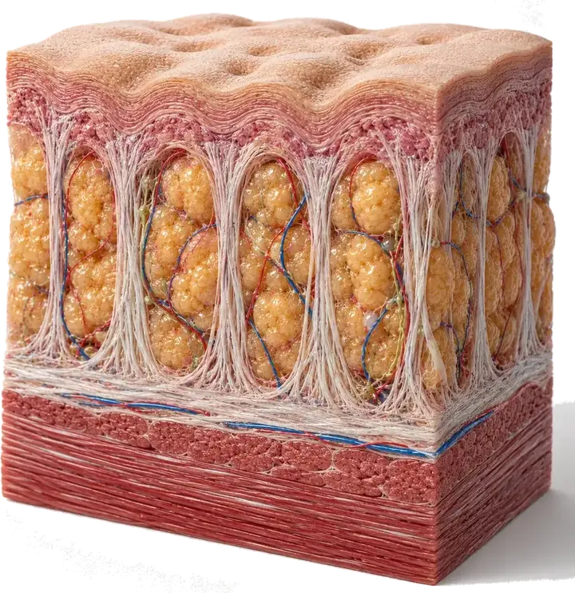

Cuidados después de la escleroterapia: qué hacer los primeros días
Terminaste tu primera sesión de escleroterapia y, aunque el procedimiento en consultorio fue rápido, los próximos días sí piden algo de cuidado: la media de compresión, el sol y qué tanto les exiges a tus piernas. Esto es lo que conviene cuidar primero, y las señales que sí justifican llamar a tu especialista antes de la cita de control.

En las primeras horas empiezan las dudas prácticas: ¿puedes subir las escaleras de tu casa sin problema?, ¿te puedes bañar con agua caliente?, ¿qué tan normal es ese moretón que ya se empieza a notar? Los cuidados después de escleroterapia no son complicados, pero sí hay un orden que conviene seguir, sobre todo en los primeros días.
¿Qué hacer el mismo día de la sesión?
Lo primero que notarás es que puedes caminar casi de inmediato: moverte un poco apenas sales del consultorio ayuda a que la sangre siga circulando bien por las venas sanas de alrededor. Lo que sí conviene evitar es quedarte sentada o acostada por horas seguidas esa misma tarde, como pasa si te vas directo a dormir una siesta larga o te sientas sin moverte el resto del día.
- Camina unos minutos tan pronto puedas después del procedimiento.
- Evita estar sentada o acostada por periodos muy largos esa misma tarde.
- Si te colocaron un vendaje o media de compresión, déjalo puesto tal como te lo indicaron.
Si quieres repasar en qué consiste el procedimiento en sí, antes de este punto ya lo explicamos en ¿Duele la escleroterapia? Cómo funciona y qué esperar.
Los cuidados después de escleroterapia que marcan la diferencia
Pasadas las primeras horas, buena parte de la recuperación depende de tres cosas: la media de compresión, el sol y el calor, y qué tanto esfuerzo le pides a tus piernas.
La media de compresión
Es, probablemente, el cuidado más importante de todos. Tu especialista te dirá exactamente cuántos días debes usarla, porque varía según el tamaño de la vena tratada: hay esquemas de unos pocos días y otros de hasta dos semanas usándola casi todo el tiempo que estás de pie. Si todavía no tienes la tuya o necesitas renovarla, en Medias de compresión en Colombia: cómo elegir la talla y el grado explicamos tallas y dónde conseguirlas.
Sol y calor, mejor en pausa
Mientras la piel cicatriza, evita el sol directo sobre la zona tratada, o cúbrela bien con protector solar si vas a exponerte. Con el sol fuerte que hay en la ciudad casi todo el año, esto aplica incluso si solo vas a salir a hacer un mandado al mediodía. También es buena idea esperar antes de volver a saunas, jacuzzis o duchas muy calientes sobre la zona: el calor puede dilatar la vena que recién se está empezando a cerrar.
Ejercicio y depilación
Caminar de forma moderada es bienvenido casi desde el primer día, pero el ejercicio de alto impacto (correr, levantar pesas pesadas, clases muy intensas) suele dejarse en pausa durante algunos días. Lo mismo pasa con la depilación de la zona tratada: mejor esperar a que la piel se vea tranquila antes de pasar cuchilla o cera por encima.
Nada de esto dura para siempre: son solo los primeros días.
¿Es normal que queden moretones o manchas?
Sí, es de lo más frecuente. Alrededor de cada punto donde entró la aguja pueden aparecer moretones, enrojecimiento o pequeñas manchas oscuras en la piel. La mayoría se nota menos en cuestión de días a pocas semanas, aunque algunas manchas tardan más tiempo, incluso meses, en desaparecer por completo.
También es común sentir la vena tratada un poco dura o abultada al tacto durante algún tiempo. Eso tampoco significa que algo salió mal: es parte de cómo el cuerpo va cerrando esa vena por dentro.
En Seravena preferimos que nos escribas y nos mandes una foto de lo que te preocupa, en vez de que te quedes dudando en casa si lo que ves es normal o no: casi siempre toma apenas un minuto resolverlo.
¿Cuántas sesiones necesitas y cuándo ves resultado?
Depende de cuántas venas tengas y de su tamaño. Es habitual necesitar más de una sesión. Para arañitas y várices pequeñas, el resultado suele notarse entre tres y seis semanas después de cada sesión; en venas más grandes, puede tardar varios meses en verse completo, y es tu especialista quien te puede dar un estimado más ajustado a tu caso. Por eso casi todas las clínicas, Seravena incluida, agendan un control cerca de un mes después de cada sesión: para revisar cómo va cicatrizando antes de decidir si hace falta otra.
Si todavía estás decidiendo entre este procedimiento y otras alternativas, comparamos las opciones en Escleroterapia vs láser para várices: ¿cuál elegir?
Vale la pena ser honesta con lo que este tratamiento no hace: la escleroterapia cierra las venas que ya existen, pero no cambia tu tendencia personal a formar nuevas várices o arañitas con el paso de los años. Eso no depende de la sesión que te hiciste, sino de tu circulación de fondo, y por eso varias pacientes necesitan más de una ronda de tratamiento a lo largo del tiempo.
Cuándo llamar a tu especialista en Medellín antes de la cita de control
La mayoría de lo que sientes esta semana es esperable. Pero hay señales que merecen una llamada antes de tu cita de control, no después:
- Dolor que en vez de mejorar va empeorando con los días.
- Enrojecimiento o calor que se va extendiendo más allá de la zona tratada.
- Fiebre o secreción en alguno de los puntos de inyección.
- Una pierna que se hincha mucho más que la otra, de un lado solo.
Si algo de lo que sientes no calza con lo descrito arriba, no te quedes esperando a que pase solo. En Seravena acompañamos el seguimiento después de cada sesión de escleroterapia desde nuestro consultorio de El Poblado, en Medellín, para revisar contigo cómo va la cicatrización. Si quieres resolver una duda puntual, puedes agendar una valoración con nuestro equipo.
Antes de dormir hoy, revisa que la media de compresión te quede bien ajustada y sin arrugas, y separa mañana diez minutos para caminar con calma apenas te levantes: es el cuidado más simple y, a la vez, el que más diferencia hace en estos primeros días.
Preguntas frecuentes
¿Cuánto tiempo hay que usar la media de compresión después de la escleroterapia?
Depende del tamaño de la vena tratada y de lo que te indique tu especialista: algunos esquemas piden usarla solo unos días y otros hasta dos semanas casi todo el tiempo que estés de pie. Lo importante es seguir exactamente la indicación que te dieron en tu sesión, no una norma general de internet.
¿Es normal que queden manchas o moretones después de la escleroterapia?
Sí. Los moretones, el enrojecimiento y las pequeñas manchas oscuras alrededor de los puntos de inyección son muy frecuentes y suelen notarse menos en días o pocas semanas, aunque algunas manchas pueden tardar varios meses en desaparecer por completo.
¿Cuándo puedo volver a hacer ejercicio después de la escleroterapia?
Caminar de forma moderada se puede hacer casi desde el primer día, pero el ejercicio de alto impacto, como correr o levantar pesas pesadas, suele dejarse en pausa durante algunos días, según lo que te indique tu especialista.
¿Cuántas sesiones de escleroterapia se necesitan para ver resultado?
Es habitual necesitar más de una sesión, sobre todo si hay varias venas o de distinto tamaño. En arañitas y várices pequeñas el resultado suele notarse entre tres y seis semanas después de cada sesión, mientras que en venas más grandes puede tardar varios meses en verse completo; tu especialista te puede dar un estimado más preciso según tu caso.